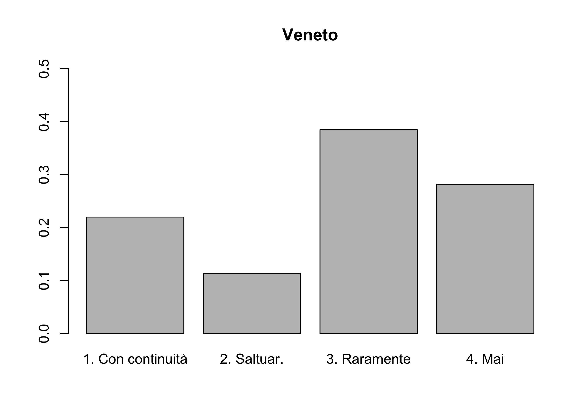
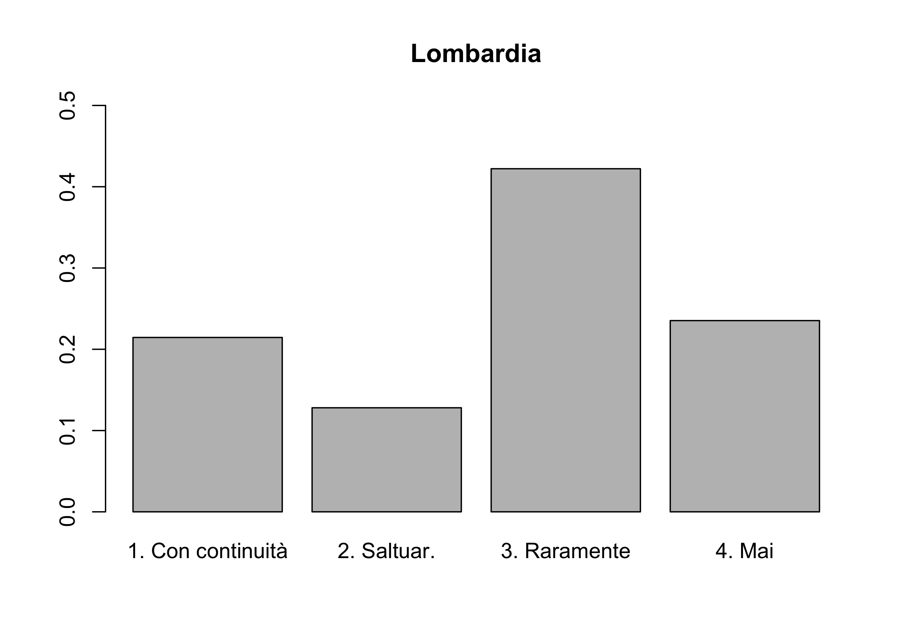
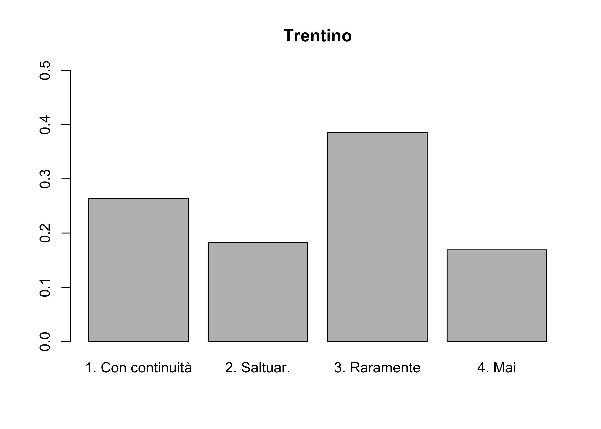
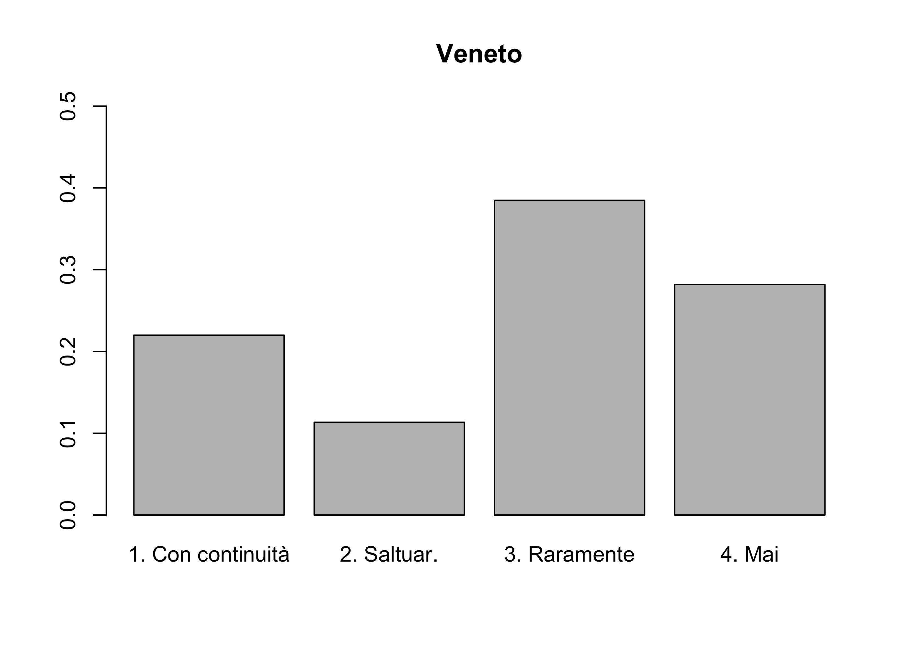
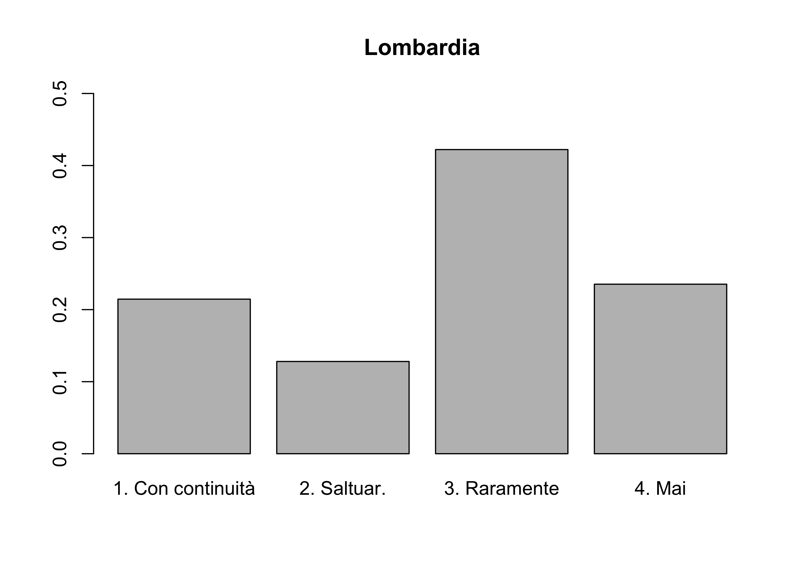
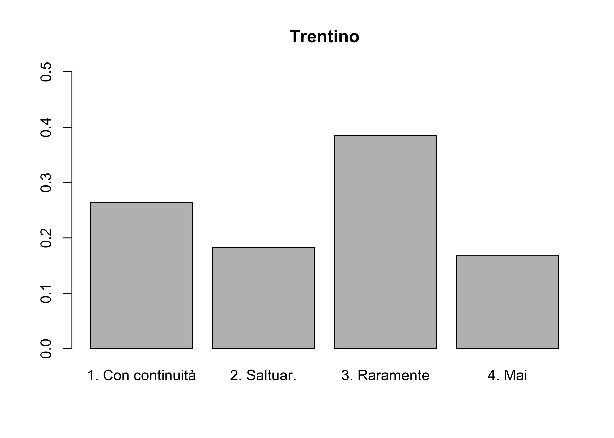

Esercizi 4: dati qualitativi, eterogeneità
Le seguenti soluzioni sono state gentilmente fornite dal tutor di Statistica I dell’A.A. 2021/2022, Alex Alborghetti, che ringrazio. Le soluzioni sono state quindi riviste dal docente, che si assume le responsabilità di eventuali sviste ed errori.
Calcolate le frequenze relative nei due caratteri, analizziamo l’eterogeneità mediante l’indice di Gini normalizzato (dato che i due caratteri hanno un numero differente di modalità):
G_\text{norm} = \frac{k}{k-1} \left(1- \sum_{j=1}^kf_j^2\right).
Nel primo carattere, G_{\text{norm},1} = 0.917. Nel secondo carattere, G_{\text{norm},2} = 0.907. Quindi, risulta leggermente più eterogeneo il primo carattere. Proviamo, invece, ad analizzare l’eterogeneità tramite entropia di Shannon. Si ricorda che:
H_\text{norm} = -\frac{1}{\log(k)}\sum_{j=1}^k f_j \log(f_j).
Nel primo carattere, H_{\text{norm},1} = 0.921. Nel secondo carattere, H_{\text{norm},2} = 0.892. È, anche stavolta, più eterogeneo il primo carattere.
Dato che
G_\text{norm} = \frac{4}{4-1} \left(1- \sum_{j=1}^kf_j^2\right) = 0.85333,
allora
\sum_{j=1}^kf_j^2 = -0.85333 \cdot \frac{4-1}{4} + 1,
ovvero
f_u^2 + f_p^2= -0.85333 \cdot \frac{4-1}{4} + 1 - 0.5^2 - 0.3^2 = 0.02.
Sappiamo inoltre che la somma delle frequenze relative è 1, ovvero:
0.5+0.3+f_p+f_u = 1.
Mettiamo a sistema queste due equazioni e risolviamo:
f_u^2 + f_p^2=0.02 \qquad (\text{i}), e f_u+f_p = 0.2 \qquad (\text{ii}).
Da (ii) si ricava f_u = 0.2-f_p. Sostituendo nella ()
0.2^2 - 0.4 f_p + 2f_p^2 = 0.02,
cioè, risolvendo l’equazione di secondo grado: f_p = 0.1 (=f_u).
La moda della variabile “attività fisica” in Lombardia è “Raramente”.



Si noti che vanno utilizzate le frequenze relative, dato che la dimensione del campione è diversa nelle tre regioni. Possiamo confrontare l’eterogeneità tramite indice di Gini normalizzato. I risultati sono G_\text{norm, Lomb} = 0.939, G_\text{norm, Ven} = 0.948 e G_\text{norm, Trent} = 0.961. Per esercizio, provare a calcolare l’entropia di Shannon.